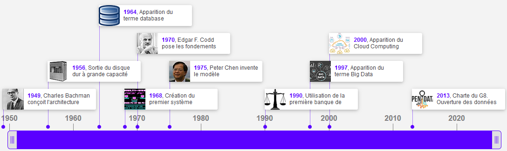
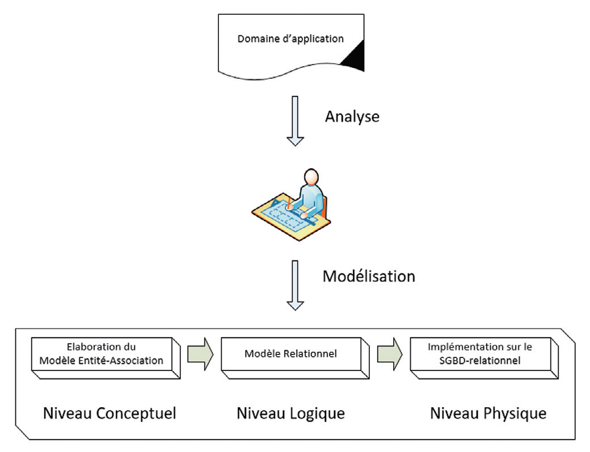
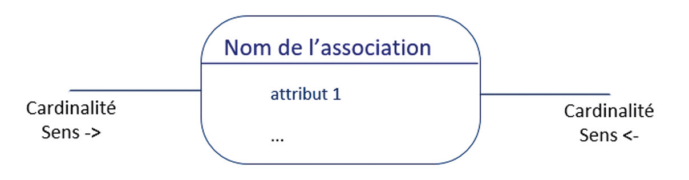
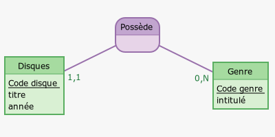
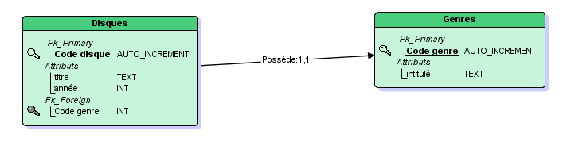
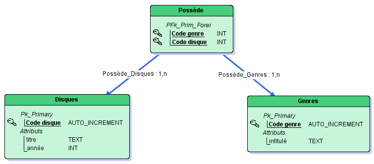

Le modèle relationnel
Introduction aux bases de données
Définitions
Une Base De Données (BDD) représente un ensemble ordonné de données dont l'organisation est régie par un modèle de données.
Le Système de Gestion de Bases de Données (SGBD) peut être vu comme le logiciel qui prend en charge la structuration, le stockage, la mise à jour et la maintenance des données. C'est en fait l'interface entre la base de données et les multiples utilisateurs (ou leurs programmes).
Historique
Quasiment toutes les bases de données que nous utilisons aujourd'hui sont basées sur les travaux d'Edgar F. Codd (1970). C'est le point essentiel dans l'histoire des bases de données.

Premiers problèmes... et premières solutions
Organiser des données, où est le problème, direz-vous ? Y a-t-il vraiment besoin de faire des études pour cela ? Il suffit d'être un peu soigneux, et il n'y a aucune raison que ça se passe mal. Eh bien si, en fait. Les données, quand elles se présentent en (très) grandes quantités, posent des problèmes auxquels on ne s'attend pas. C'est bien pour cela qu'on a mis au point un certain nombre de règles et de méthodes qui, si elles ne peuvent dispenser personne de réfléchir, aident néanmoins à réfléchir en évitant les catastrophes les plus courantes. Voyons les problèmes les plus évidents qui se posent lorsqu'on veut organiser des informations. Pour cela, imaginons que nous voulions informatiser les rayons de ma discothèque… – enfin, disons les dix premiers CD du rayonnage, parce que sinon, ça va être un peu longuet. Faisons simple pour commencer : nous ne noterons, pour chaque CD, que le titre, l'année, le nom de l'artiste et le genre musical. Cela nous donne la liste suivante :
- Nursery Cryme, Genesis, 1972, rock progressif
- Foxtrot, Genesis, 1972, rock progressif
- Selling England by the Pound, Genesis, 1973, rock progressif
- Symphonie n°2, Sibelius, 1985, classique
- Symphonie n°7, Sibelius, 1987, classique
- Concerto pour violon, Mendelssohn, 1992, classique
- Crime passionnel, Guidoni, 1982, chanson française
- 5th Gear, Brad Paisley, 2007, country
- Thick as a Brick, Jethro Tull, 1973, rock progressif
- Purpendicular, Deep Purple, 1996, rock
Il va de soi que pour représenter de telles informations, une liste c'est bien, mais qu'un tableau, ce serait beaucoup mieux.
Les conventions étant en accord avec ce que nous suggère l'intuition, on mettra en ligne, les uns en-dessous des autres, les différents disques (autrement dit, en quelque sorte, les « individus » de notre base). Et on portera en colonne les différents renseignements dont on dispose pour chacun de ces individus.
Naturellement, il est préférable – et, en réalité, obligatoire – de nommer ces colonnes : ma discothèque prendrait ainsi la forme du tableau suivant :
| Titre | Artiste | Annee | Genre |
|---|---|---|---|
| Nursery Cryme | Genesis | 1972 | rock progressif |
| Foxtrot | Genesis | 1972 | rock progresif |
| Selling England by the Pound | Genesis | 1973 | rock progressif |
| Symphonie n°2 | Sibelius | 1985 | classique |
| Symphonie n°7 | Sibelius | 1987 | classique |
| Concerto pour violon | Mendelssohn | 1992 | Classique |
| Crime passionnel | Guidoni | 1982 | chanson française |
| 5th Gear | Brad Paisley | 2007 | country |
| Thick as a Brick | Jethro Tull | 1973 | rock progressif |
| Purpendicular | Deep Purple | 1996 | rock |
Or, ce petit tableau, à lui seul, fait apparaître au moins deux problèmes majeurs.
Premier problème majeur
Le premier, c'est que des informations identiques s'y répètent : en l'occurrence, celles concernant les artistes, et encore plus, le genre. En termes savants, on parle de redondance des informations.
Imaginons que ma discothèque comporte plusieurs centaines de CD, il y a fort à parier que la mention « classique » ou « rock progressif » va se retrouver répliquée des dizaines de fois. Or, tout cela, il va bien falloir le stocker quelque part sous forme de bits et d'octets, et des informations inutilement répétées, ce sont des octets inutilement occupés…
On n'en meurt pas, direz-vous. Certes, encore que.
Second problème majeur
Le second problème, lié au premier, est pour sa part rédhibitoire. C'est que vu la manière dont j'ai bâti mes informations, je ne suis pas à l'abri d'une erreur, ou même d'un simple manque d'homogénéité, dans la saisie.
Par exemple, lorsque j'ai tapé le genre du CD Foxtrot, j'ai oublié les deux « s » de « progressif », ce qui est une faute de frappe assez classique.
De même, le genre « classique » est orthographié tantôt avec une majuscule, tantôt sans majuscule. Tout cela est fort préjudiciable pour la suite des événements.
Si je fais une recherche, par exemple, sur le genre « rock progressif » ou « classique », il manquera des CDs qui auraient dû y figurer.
Cette organisation laisse donc la possibilité qu'existe une hétérogénéité des données, un des pires cauchemars de l'informaticien (qui pourtant n'en manque pas).
Ces deux problèmes possèdent une solution commune, très simple mais extrêmement efficace, qui consiste à recenser séparément les CDs et les genres :
| Titre | Artiste | Annee |
|---|---|---|
| Nursery Cryme | Genesis | 1972 |
| Foxtrot | Genesis | 1972 |
| Selling England by the Pound | Genesis | 1973 |
| Symphonie n°2 | Sibelius | 1985 |
| Symphonie n°7 | Sibelius | 1987 |
| Concerto pour violon | Mendelssohn | 1992 |
| Crime passionnel | Guidoni | 1982 |
| 5th Gear | Brad Paisley | 2007 |
| Thick as a Brick | Jethro Tull | 1973 |
| Purpendicular | Deep Purple | 1996 |
| Genre |
|---|
| chanson française |
| classique |
| country |
| rock |
| rock progressif |
Il ne reste plus à présent qu'à préciser à quel genre appartient chaque CD. Pour ce faire, on identifie chaque genre par un code unique :
| Code | Genre |
|---|---|
| 1 | chanson française |
| 2 | classique |
| 3 | country |
| 4 | rock |
| 5 | rock progressif |
Et on reporte ce code dans le tableau des CDs :
| Titre | Artiste | Annee | Code |
|---|---|---|---|
| Nursery Cryme | Genesis | 1972 | 5 |
| Foxtrot | Genesis | 1972 | 5 |
| Selling England by the Pound | Genesis | 1973 | 5 |
| Symphonie n°2 | Sibelius | 1985 | 2 |
| Symphonie n°7 | Sibelius | 1987 | 2 |
| Concerto pour violon | Mendelssohn | 1992 | 2 |
| Crime passionnel | Guidoni | 1982 | 1 |
| 5th Gear | Brad Paisley | 2007 | 3 |
| Thick as a Brick | Jethro Tull | 1973 | 5 |
| Purpendicular | Deep Purple | 1996 | 4 |
Ainsi, nous venons de faire d'une pierre deux coups :
- On a économisé de la place en mémoire, car stocker un code mobilise beaucoup moins d'octets que stocker un intitulé.
- Surtout, on a pris une garantie contre les informations hétérogènes : le code correspond toujours au même intitulé, et on ne peut plus guère imaginer se retrouver avec un même genre musical orthographié différemment.
Ce que nous venons de faire, c'est – en tout petit – le fond de la question en matière de modélisation de l'information : nous venons de créer une relation entre deux tables (deux entités) ; voilà pourquoi on parle de Systèmes de Bases de Données Relationnelles. Tout ce que nous allons voir ensuite, n'est pour ainsi dire que des complications et des raffinements à partir de cette base simple.
Cela dit, jusqu'à maintenant, nous avons procédé uniquement par intuition – or, vous vous en doutez bien, il existe un certain nombre de formes pré-établies, de standards (tant de méthode que de représentation) pour venir à bout des problèmes les plus complexes. Ce sont ces formes et ces standards que nous allons aborder à présent.
Remarque capitale
Il suffit d'observer la situation à laquelle nous sommes parvenus pour constater que nous n'avons parcouru que la moitié du chemin. Nous avons certes éliminé une source de redondances en créant la table « Genre ». Mais nous en avons laissé une deuxième : celle liée aux artistes. Il est donc essentiel de comprendre que ce qui est présenté ici n'est que le premier pas, et que notre modélisation est irrecevable en l'état.
Conception de bases de données relationnelles
La conception des bases de données est la tâche la plus ardue du processus de développement du système d’information.
Les méthodes de conception préconisent une démarche en étapes et font appel à des modèles pour représenter les objets qui composent les systèmes d’information, les relations existantes entre ces objets ainsi que les règles sous-jacentes.
La modélisation se réalise en trois étapes principales qui correspondent à trois niveaux d’abstraction différents :
Les différents niveaux
La représentation de la base de données est faite indépendamment de toute considération informatique. C'est le niveau le plus abstrait (mais qui contient déjà toutes les informations indispensables pour la construction de la base de données). On parle de Modèle Conceptuel de Données (MCD).
Il s'agit de l'adaptation du schéma conceptuel en tableaux à deux dimensions. Ce niveau est plus proche de ce que sera la base effective qui sera réalisée sur machine. On parle ici de Modèle Logique des Données (MLD).
Implémentation informatique sur un système de gestion de bases de données relationnelles (SGBD).
Remarque importante
Le point crucial à enregistrer dès maintenant, c'est que le MLD se déduit strictement du MCD d'après des règles formelles. Autrement dit, une fois le MCD réalisé, il n'y a plus besoin de réfléchir une seule seconde pour produire le MLD : tout se fait par automatismes. La meilleure preuve, c'est qu'il existe des logiciels qui se proposent de réaliser le MLD d'un clic de souris, d'après le MCD. En revanche, il n'existe rien de tel pour concevoir le MCD : le seul ingrédient qui entre dans sa composition est l'huile de neurones...

Le modèle Entité–Association
Entités, attributs et identifiants
Ce modèle permet de distinguer les entités qui constituent la base de données et les associations entre ces entités.
Définitions
On appelle entité un objet pouvant être identifié distinctement. Chaque entité est donc unique.
Retour à l'exemple
Pour notre discothèque, on propose très logiquement les entités « Disques » et « Genres ».
Chaque entité est décrite par un ensemble de propriétés appelées attributs.
Retour à l'exemple
Pour notre discothèque, l'entité « Disques » possède les attributs « Titre », « Artiste » et « Année » tandis que l'entité « Genres » possède l'attribut « Intitulé » (on évite de donner le même nom à une entité et à un de ses attributs).
Un ou plusieurs attributs permettent d'identifier de manière unique l'entité, on parle alors d'identifiant (ou de clé primaire (Primary Key en anglais)).
On peut représenter une entité par le schéma suivant :
| Nom de l'entité |
|---|
| identifiant |
| attribut 1 |
| attribut 2 |
| ... |
| ... |
Un attribut est désigné par :
- Un nom
- Une valeur de type défini (entier, chaine de caractères, booléen...)
Remarque capitale
L'étape consistant à créer autant d'entités que nécessaire est la première de toutes, et elle est absolument fondamentale.
Le critère est simple : aucune valeur de propriété ne doit se répéter (sauf peut-être, à titre exceptionnel) dans aucune table.
Cette règle, intangible quand il s'agit de valeurs de type texte, peut être assouplie lorsqu'il s'agit de valeurs numériques (dont les dates) : il serait en effet un peu ballot d'économiser la répétition d'un nombre... au prix de la création d'un code permettant d'accéder à ce nombre : ce serait payer de la main gauche ce qu'on économise de la main droite.
Cependant, créer une entité composée uniquement de nombres peut se justifier, lorsqu'on veut restreindre les possibilités à un certain ensemble de valeurs (par exemple, les différentes motorisations disponibles pour une automobile).
En ce qui concerne l'identifiant, il est en fait assez rare de trouver spontanément un ou plusieurs attributs capables de jouer ce rôle.
Même les propriétés qui semblent faire de bonnes candidates (par exemple, une plaque d'immatriculation ou un numéro de sécurité sociale) ne sont pas forcément aussi opportuns qu'elles en ont l'air, pour un certain nombre de raisons.
Et il n'est pas rare qu'aucune des propriétés présentes ne puisse nous prémunir contre les doublons ; c'est le cas avec l'entité
« Disques » de notre exemple : plusieurs Cds peuvent très bien avoir le même titre, et je ne parle pas de l'auteur ni de l'année.
On ne peut pas davantage exclure la possibilité que deux auteurs homonymes aient sorti la même année un disque portant le même titre (ce qui nous empêche donc d'avoir confiance dans une clé primaire constituée de la combinaison des trois propriétés).
Voilà pourquoi le plus souvent, on sera amené à créer une propriété supplémentaire destinée uniquement à jouer le rôle d'identifiant / clé primaire. Il s'agira presque toujours d'un code, unique pour chaque occurrence de l'entité (et voilà pourquoi un nombre de type
« auto-incrément » est si pratique). Ce code sera rarement visible par l'utilisateur, qui ignorera sans doute son existence : il n'en sera pas moins indispensable pour le système informatique.
Ainsi, les deux entités de notre discothèque pourront être représentées ainsi :
| Disques |
|---|
| Code disque |
| titre |
| année |
| Genres |
|---|
| Code genre |
| intitulé |
Une entité peut avoir une ou plusieurs occurrences (et parfois même aucune).
Pour illustrer cela, voici un exemple de 3 occurrences de l'entité « Disques » :

Ces occurrences sont appelées tuples ou lignes.
Remarque importante
Vous remarquerez que l'attribut « auteur » a disparu des radars... En effet, comme cet attribut possède des valeurs redondantes (la discothèque contient plusieurs CDs d'un même auteur), le critère de non-redondance des données impose de sortir cet attribut de l'entité « Disques ».
On aurait très bien pu créer alors une troisième entité : l'entité « Auteur » par exemple mais cela n'a pas été fait ici dans le seul but de faciliter la compréhension des notions qui vont suivre.
Associations
Définition
Une association définit un lien sémantique (= qui a un sens) entre des entités.
Elle permet de traduire une partie des règles de gestion qui n'ont pas été satisfaites par la simple définition des entités.
Une association est a minima caractérisée par :
- Un nom : généralement on utilise un verbe définissant le lien entre les entités.
- Deux cardinalités : elles sont présentes sur les 2 extrémités du lien. Chaque cardinalité est un couple de valeurs (mini, maxi) qui traduisent 2 règles de gestion (une par sens).
Remarque
Une association peut aussi avoir des attributs.
On peut représenter une association par le schéma suivant :

Dans le cas de notre discothèque, puisque chaque CD possède un genre (et pas n'importe lequel), les deux entités se trouvent naturellement en relation l'une avec l'autre et on peut nommer « possède » cette association.
Cardinalités
Il s'agit maintenant de déterminer les cardinalités. Pour cela, on se pose la question suivante : à combien d'éléments de l'autre entité chaque élément peut-il être associé ? Lorsqu'on bâtit une relation entre deux entités, on doit nécessairement préciser ce point, car de lui dépendent de très importantes conséquences. Ici, il paraît évident qu'un même genre musical peut être représenté par plusieurs disques. En sens inverse, en revanche, on peut être embêté pour décider à combien de genres peut correspondre chaque disque. On peut en effet imaginer soit que chaque disque ne puisse être rattaché qu'à un genre et un seul afin de faciliter le classement, soit qu'à chaque disque on puisse attribuer plusieurs genres à la fois, ce qui introduit davantage de complexité, mais aussi davantage de souplesse. La décision, dans cette alternative, n'appartient pas à l'informaticien : il s'agit d'un choix d'ordre fonctionnel, qui doit être subordonné aux besoins de l'organisation pour laquelle est conçue la base de données. Il n'existe donc aucune règle qui permette de trancher a priori entre les deux possibilités... excepté que la technique doit être au service des besoins de ceux qui s'en serviront, et non l'inverse. En revanche, ce qui nous intéresse ici, ce sont les conséquences de ce choix sur notre base de données.
Cardinalités minimum et maximum
De là, il faut distinguer le nombre minimum et le nombre maximum de ces correspondances : pour chaque élément d'une entité, on doit donc stipuler à combien d'éléments de l'autre entité celui-ci est susceptible de correspondre, au minimum et au maximum. Ainsi, toute relation entre deux entités A et B impose de préciser quatre nombres (quatre cardinalités) : cardinalité minimum de A vers B, maximum de A vers B, minimum de B vers A, maximum de B vers A. En reprenant l'exemple de la discothèque, cela revient à se poser les questions suivantes :
- À combien de genres au minimum correspond chaque CD ? (autrement dit : un CD peut-il ne pas avoir de genre, ou en a-t-il forcément au moins un ?)
- À combien de genres au maximum correspond chaque CD ? (autrement dit : un CD peut-il avoir plusieurs genres, ou est-il limité à un seul ?)
- À combien de CDs au minimum correspond chaque genre ? (autrement dit : ma table des genres comprend-elle uniquement des genres qui correspondent à mes CDs, ou peut-il y avoir des genres « orphelins » ?)
- À combien de CDs au maximum correspond chaque genre ? (autrement dit : puis-je avoir plusieurs CDs du même genre, ou est-ce interdit ?)
Les cardinalités obéissent à un formalisme assez étroit :
Formalisme des cardinalités : les différentes valeurs
La cardinalité minimum ne peut prendre que les valeurs 0 ou 1. Autrement dit, soit on considère qu'un élément de la table A peut être en relation avec un (ou plusieurs) éléments de la table B (mais que ce n'est pas obligatoire), soit on considère que tout élément de la table A doit impérativement être en relation avec au moins un élément de la table B. Dans notre exemple, choisir 1 comme cardinalité minimum signifie qu'un disque doit être classé dans au moins un genre. Choisir 0 signifie qu'on estime que certains disques n'ont pas forcément de genre (le même problème se pose dans l'autre sens de la relation, pour savoir s'il peut exister ou non des genres sans disques).
La cardinalité maximum ne peut valoir que 1 ou N, autrement dit un ou plusieurs. C'est la discussion de tout à l'heure à propos des genres : autorise-t-on ou non chaque CD à être classé dans plusieurs genres à la fois ? En sens inverse, il ne fait aucun doute qu'à chaque genre, doivent pouvoir correspondre plusieurs CD.
Il n'existe donc que quatre cas de figure possibles pour les cardinalités : (0,1), (0,N), (1,1) et (1,N).
Voilà donc ce que cela donne pour notre exemple (schéma réalisé à partir du site mocodo.net) :

Schéma conceptuel des données pour la gestion d'une discothèque
Cette représentation ne se lit pas n'importe comment. Pour être certain de ne pas commettre de contresens, lorsqu'on traduit le schéma ci-dessus, il vaut mieux éviter de dire « Les disques possèdent des genres », ou pire encore « La table Disques possède certains genres ».
La bonne traduction, celle qui vous évitera au maximum de commettre des erreurs, consiste à dire que « Chaque élément de la table Disques possède un et un seul genre ».
En prenant l'affaire par l'autre bout, on peut tout aussi bien dire (même si c'est un peu laid à l'oreille) : « Chaque genre est possédé par zéro, un ou plusieurs disques ».
Raccourcis de langage
Pour décrire les cardinalités, on va souvent user d'un raccourci de langage. Comme les cardinalités les plus décisives sur l'architecture de la base sont souvent les cardinalités maxima, on aura tendance à ne parler que d'elles.
Ainsi, dans le cas d'une relation où l'une des deux cardinalités maximales vaut \(1\) et l'autre \(N\), on dira volontiers qu'on a affaire à une relation « un à plusieurs ». Lorsque les deux cardinalités maximales valent \(N\), on parlera de relation « plusieurs à plusieurs ».
Remarque
Une relation de type « un à un » (où, donc, les deux cardinalités maximum sont égales à \(1\)) est un cas limite. Cela signifie que nous avons créé deux entités qui en réalité n'en forment qu'une seule, puisque chaque élément de l'une corespond à un élément de l'autre, et à un seul. Ce n'est pas à proprement parler une faute, mais face à une telle situation, on a toujours intérêt à se demander ce qui justifie d'avoir créé deux entités plutôt qu'une seule.
Du MCD au MLD : première approche
On rappelle que par rapport au MCD, le MLD est un plan moins abstrait et plus proche de la réalité, c'est-à-dire de la base de données telle qu'elle existera sur les machines.
On rappelle aussi que toute la difficulté de la modélisation réside dans l'élaboration du MCD. Une fois que celui-ci est conçu, le MLD s'en déduit par l'application de quelques règles (on pourrait dire : d'un algorithme).
Donc, le passage du MCD au MLD n'est qu'une question de rigueur, et plus du tout d'intelligence ou d'imagination.
Transformation d'une entité en relation
Une première règle est que toute entité du MCD est transformée en un tableau à deux dimensions appelé relation comme le montre la figure suivante :


Remarques
- L'identifiant de l'entité devient la clé primaire de la relation. Il est représenté sur la figure ci-dessus par une clé et la dénomination Pk_Primary.
- L'ensemble des valeurs possibles d'un attribut définit un domaine.
On trouve également la notation textuelle : NomRelation(identifiant, attribut1, attribut2...).
On peut par exemple noter la relation « Disques » par : Disques(Code disque, titre, année).
Remarques
- Le nom de la relation est en gras.
- La clé primaire est soulignée.
Transformation d’une association en relation
Selon les cardinalités maximales qui caractérisent la relation, les choses vont se passer très différemment.
Si l'une des deux cardinalités maximales vaut 1
Autrement dit, l'une des cardinalités est (0,1) ou (1,1), ce qui est le cas de notre exemple dont on remet ci-dessous le schéma :
Schéma du MCD lorsque l'une des deux cardinalités vaut (1,1)
Concrètement, cela veut dire, comme dans notre exemple, que chaque CD possède un genre et un seul. Un CD ne peut pas ne pas avoir de genre ; il ne peut pas non plus en avoir plusieurs. Dans ce cas, dans le MLD, cette relation devient une relation directe entre les deux tables. L'identifiant de la table côté « plusieurs » devient une nouvelle propriété de la table du côté « un », ainsi que l'illustre cet exemple :

Schéma du MLD lorsque l'une des deux cardinalités vaut (1,1)
Quand on y réfléchit, c'est parfaitement logique : pour chaque disque, il faudra renseigner un code (et un seul) qui correspondra à l'un des genres présents dans la table Genres.
La table Genre, elle, ne contient aucun code renvoyant vers les disques - sinon, cela voudrait dire que chaque Genre renvoie vers un disque et un seul !
En fait, on vient de retrouver par un long détour l'exemple à partir duquel on avait introduit le raisonnement (« Tout ça pour ça », direz-vous...)
Remarques
- On a ajouté un attribut « Code genre » dans la relation « Disques », cet attribut correspond à la clé primaire de la relation « Genres ». On dit que c’est une clé étrangère (Foreign Key). Dans le schéma ci-dessus, elle est également représentée par une clé et la dénomination Fk_Foreign.
- On lie ces deux attributs entre eux.
Dans l’écriture textuelle, on ajoute la clé étrangère avec le symbole « # » ou en soulignant l’attribut concerné par un trait en pointillé. Par exemple la relation « Disques » devient : Disques(Code disque, #Code genre, titre, année).
Si les deux cardinalités maximales sont N
Autrement dit, si la relation est de type « plusieurs à plusieurs ». Voici ce que donnerait le schéma du MCD dans le cas de notre discothèque :

Schéma du MCD lorsque les deux cardinalités maximales sont N
Dans le MLD, la relation devient alors une nouvelle table, elle-même en relation avec les deux tables produites par les deux entités. Une telle table est dite table de correspondance, ou encore table de liaison, table de jonction, table d'association, etc. Elle ne contient pas à proprement parler de données : son rôle est d'organiser les rapports entre les éléments des tables qui, elles, les contiennent. Une table de jonction contiendra uniquement des propriétés correspondant aux clés primaires des deux entités, qu'elle associera deux à deux.
Et voici le schéma du MLD :

Schéma du MLD lorsque les deux cardinalités maximales sont N
Remarque
On a donc transformé l’association en relation par l’ajout de deux attributs correspondant respectivement aux clés primaires de chacune des entités. Dans ce cas, il y a donc deux clés étrangères. Et ce couple de clés étrangères forme la clé primaire de la nouvelle relation.
Sur notre schéma, on a les 2 dénominations associées (PFk_Prim_Forei).
Les contraintes d'intégrité
Le modèle relationnel impose une règle minimale qui est l'unicité des clés, comme nous allons le voir ci-dessous. Cependant, il existe plusieurs points pour respecter l'intégrité d'une base de données.
Par définition, une relation est un ensemble de tuples. Un ensemble n'ayant pas d'élément en double, il ne peut pas exister deux fois le même tuple dans une relation.
Toute relation doit donc posséder une clé unique (clé primaire)
Correctement construite, une base de données fait appel à des données situées dans différentes relations.
Pour que les données restent utilisables et cohérentes, il ne faut pas que l'on puisse détruire des données qui dépendent les unes des autres. C'est le rôle de l'intégrité référentielle de protéger ces relations.
Autrement dit, l'intégrité référentielle vérifie qu'une valeur de clé étrangère existe bien en tant que valeur de clé primaire dans une autre table.
Dans notre exemple : des genres sont reliés à des disques. L'intégrité référentielle empêchera la suppression d'un genre si des disques y sont rattachés dans la base de données. En procédant ainsi, les genres seront toujours reliés à leurs disques et l'utilisateur ne pourra pas supprimer (involontairement) des données essentielles.
Lors de l'insertion de tuples dans une relation, il arrive fréquemment qu'un attribut soit inconnu ou non applicable.
Par exemple, l'année de sortie d'un disque peut être inconnue. On est alors amené à introduire dans la relation une valeur conventionnelle appelée valeur nulle.
Attention
Tout attribut dans une relation ne peut prendre une valeur nulle. En effet, l'existence d'une clé unique impose la connaissance de la clé afin de pouvour vérifier que cette valeur de clé n'existe pas déjà. La clé ne peut donc pas être nulle !
En théorie, une relation est construite à partir d'un ensemble de domaines.
En pratique, les domaines gérés par les systèmes sont souvent limités aux types de base (entiers, réels, chaînes de caractères), parfois monnaie et date.
Afin de spécialiser un type de données pour composer un domaine plus fin (par exemple, les années de sortie d'un disque qui peuvent être des entiers compris entre 1949 et 2100), cette notion de contrainte de domaine est souvent ajoutée aux règles d'intégrité.